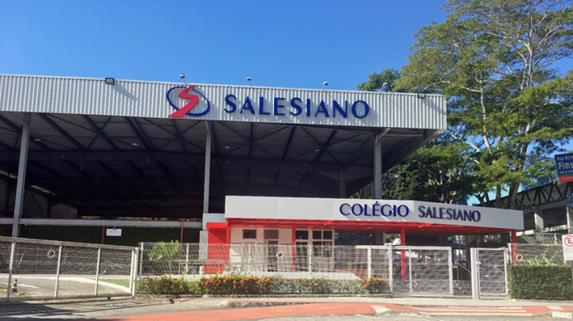
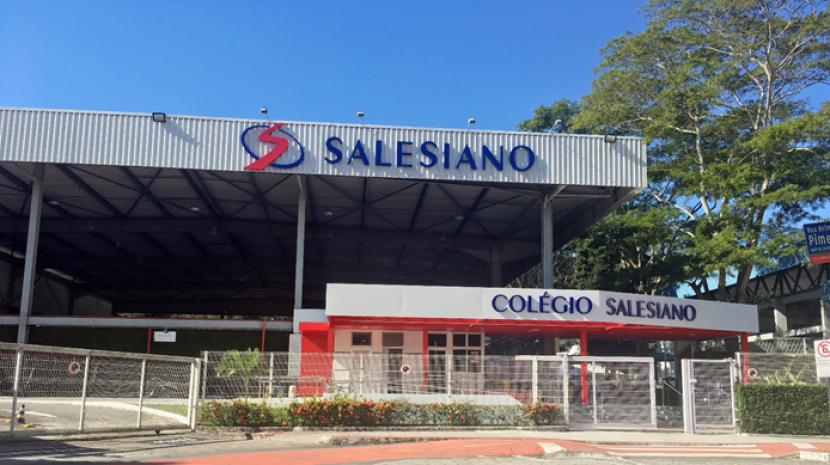

COLÉGIO SALESIANO JARDIM CAMBURI
Os Salesianos atuam na manutenção de escolas no Brasil desde o século XIX. Ao chegarem da Europa, construíram o Colégio Salesiano Santa Rosa, em Niterói, no Rio de Janeiro, em 1833, cuja escola foi a primeira da congregação no país. Era um contexto de analfabetismo elevado, ao mesmo tempo em que a industrialização e a demanda por mão de obra qualificada estavam em aceleração. Desse modo, os religiosos forneciam a educação básica e formação profissional.[6] No decorrer das décadas seguintes, outras unidades foram criadas pelo território brasileiro, atingindo um total de 16 em 1904 e 30 em 1933.
Em 1994, ocorreu o primeiro encontro das Escolas Salesianas na América (ESA), no qual foi difundida a proposta de instituir redes exclusivamente educativas dentro da congregação. Nesse sentido, no segundo encontro, realizado no Equador em 2001, foi iniciada a união entre as escolas mantidas pelos Salesianos de Dom Bosco e as Filhas de Maria Auxiliadora no Brasil para ser formada a Rede Salesiana de Escolas (RSE). No ano seguinte, foi nomeado o corpo diretor e foi iniciada a proposta pedagógica, que foi concluída em 2005.[2] Em 2013, o material didático passou a ser fornecido pela Editora Edebê Brasil, que foi criada inicialmente para atender à demanda da rede.
projetos
aqui o aluno é um comunicador que debate ideias em rede e cia soluções criativas para os problemas do mundo
aqui o aluno desenvolve competencias multiplas, do autoconhecimento à empatia, sendo empreendedor de si, para o futuro
aqui o estudante se torna um cidadão global e amplia seus horizontes, desenvolvendo novas habilidades em um segundo idioma (inglês)
aqui a aprendizagem é criativa, os estudantes são os protagonistas e, com consiência planetária, criam soluções para o mundo
galeria

 
v=

v=
contatos
telefone
55+ 27 9999988843
e-mail
salesianojc@gmail.com
facebook/instagram
@salesianojardimcamburi